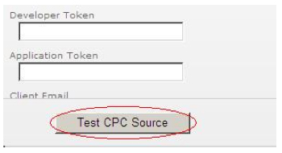
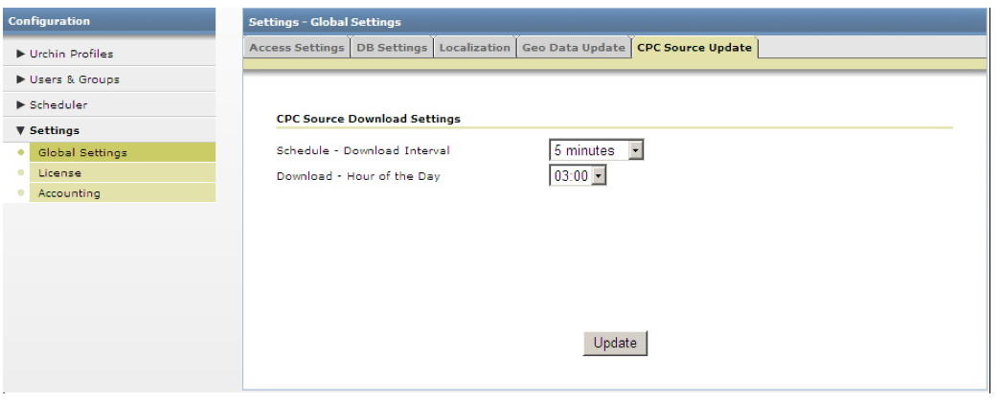

Sorgenti CPC (costo per clic) (Urchin 6.5+)
Urchin 6.5 include un nuovo tipo di sorgente di dati: la sorgente costo per clic (CPC). Analogamente alle sorgenti log, le sorgenti CPC consentono l'estrazione automatica di dati di campagne CPC da sorgenti esterne. Collegati a profili esistenti come sorgenti e filtri, le sorgenti CPC consentono l'inserimento automatico di dati CPC nei rapporti Urchin. Le sorgenti CPC possono essere create solo per Google AdWords (Urchin 6.5+) e Yahoo! Search Marketing (Urchin 6.6+).
Nota. A causa delle limitazioni insite nella Versione principianti di AdWords, le sorgenti CPC non funzionano con gli account creati con questa versione di AdWords. Per utilizzare le sorgenti CPC, è necessario passare alla Versione standard di AdWords.
Nota importante sugli upgrade da 6.500 a 6.501. Quando si esegue l'upgrade dalla versione 6.500 alla versione 6.501, è necessario eliminare manualmente i dati CPC obsoleti. A tal fine, elimina tutti i contenuti delle seguenti directory:
<path_to_urchin_6500_installation>/data/cpc/... <path_to_urchin_6500_installation>/data/history/cpc/...
Gestione sorgenti CPC
La sezione Gestione sorgenti CPC si trova nella sezione Configurazione > Profili Urchin (Urchin 6.5 +).

Gestione sorgenti CPC mostra un elenco delle sorgenti CPC (Costo per clic) configurate nell'istanza Urchin e contiene controlli UI che consentono a un amministratore di creare e modificare le sorgenti CPC.
Creazione di una nuova sorgente CPC
Per aggiungere e configurare nuove sorgenti CPC, fai clic sul pulsante "Aggiungi" in alto a destra nella schermata di gestione delle sorgenti CPC.

In tal modo verrà avviata la "procedura guidata per l'aggiunta di una sorgente CPC" che ti guiderà nella procedura di aggiunta/configurazione di una sorgente CPC.
Nella prima fase della procedura guidata inserisci i seguenti dati:
- Account facoltativo - Specifica a quale account verrà associata la sorgente CPC appena aggiunta (solo in modalità Data Center).
- Nome sorgente CPC: il nome della sorgente CPC;
- Tipo sorgente CPC:
Google AdWords
Email* - L'indirizzo email utilizzato per l'accesso a un account AdWords o a un account Centro clienti (MCC);
- Password* - La password utilizzata per l'accesso all'account;
Token sviluppatore - Si tratta di una stringa univoca che identifica uno sviluppatore autorizzato dell'API di AdWords (facoltativo). Urchin include un token sviluppatore predefinito, pertanto se non hai intenzione di utilizzare il tuo token sviluppatore, non inserire alcun valore in questo campo.
Token applicazione - Si tratta del token dell'applicazione che verrà utilizzato per accedere all'API di AdWords. Come nel caso del token sviluppatore, puoi lasciare questo campo vuoto.
- Email cliente - In caso di acceso al Centro clienti (l'indirizzo email è l'indirizzo utilizzato per l'accesso a un account Centro clienti), indica l'indirizzo email dell'account cliente al quale si accede.
ID cliente - In caso di accesso al Centro clienti, l'ID cliente dell'account AdWords al quale si accede (ad esempio, un numero del tipo 123-456-7890 nell'angolo in alto a destra nella schermata di Google AdWords). Questo elemento può sostituire l'indirizzo email del cliente.
È possibile convalidare le impostazioni della sorgente CPC premendo il pulsante "Test sorgente CPC".

Yahoo! Search Marketing (YSM)
- Nome utente* - Questo è il nome utente dell'account YSM a cui si accede. Può essere l'indirizzo email dell'inserzionista o l'indirizzo email dell'agenzia che effettua l'accesso al rapporto a nome dell'inserzionista.
- Password* - Questa è la password dell'account YSM a cui si accede.
- ID account principale* - Questo è l'ID dell'account principale dell'inserzionista
- ID account * - Si tratta dell'ID dell'account dell'inserzionista.
- Chiave di licenza - Si tratta della chiave di licenza per l'utente che ha effettuato l'accesso, l'inserzionista o l'agenzia (obbligatorio).
- Nome utente "Per conto di" - Si tratta del nome utente "Per conto di". È obbligatorio solo se il nome utente viene utilizzato per l'accesso dell'agenzia e non dell'inserzionista (facoltativo).
- Password Per conto di - Si tratta della password utilizzata per conto dell'inserzionista (facoltativo).
Fai clic sul pulsante 'Fine' per completare la procedura.

Modifica della sorgente CPC
Una volta che il sorgente CPC è stato aggiunto, puoi modificarne le impostazioni, eliminarlo o pianificarne il download.

Per modificare le impostazioni della sorgente CPC esistente, fai clic sul pulsante "Modifica" accanto alla sorgente CPC desiderata.

Puoi modificare le impostazioni di accesso di un account AdWords o YSM e attivare o disattivare i download futuri di questa sorgente CPC. NOTA. Anche se scegli di disattivare il download di rapporti futuri, i profili associati a questa sorgente CPC continueranno a utilizzare i rapporti già scaricati.
Nella scheda 'Profili', è possibile associare la sorgente CPC a uno o più profili esistenti. L'elenco dei profili associabili è limitato all'account Urchin corrente. I dati CPC delle sorgenti CPC associate vengono visualizzati nei rapporti dei profili corrispondenti.

Pianificazione della sorgente CPC
Nella scheda Pianificazione della schermata Modifica sorgente CPC, è possibile definire le impostazioni di download della sorgente CPC:
- Pianificazione - Intervallo di download - Il download dei dati CPC è suddiviso in due fasi distinte. Nella prima fase, vengono convalidate le credenziali CPC e viene eseguita una richiesta di rapporto al server CPC. Nella seconda fase, viene verificata periodicamente la disponibilità del rapporto finché questo non risulta disponibile. La seconda fase si conclude con il download vero e proprio del rapporto. La disponibilità di un rapporto sul server richiede un tempo variabile in funzione del numero di campagne presenti nell'account, della quantità di dati da richiamare, del carico corrente del server e così via. Tale intervallo determina il momento in cui Urchin inizia a verificare la disponibilità del rapporto dopo che questo è stato richiesto. Il suggerimento generale in questo caso è quello di impostare tale intervallo su valori più elevati in caso di account di grandi dimensioni con una grossa quantità di traffico di clic.
- Download - Ora del giorno - Qui è possibile configurare l'ora del giorno in cui deve essere scaricato il rapporto aggiornato per questa sorgente CPC. IMPORTANTE. Poiché i dati CPC vengono estratti su base giornaliera (e non oraria), si raccomanda vivamente di lasciar trascorrere almeno 2 ore dopo il termine della giornata completa nel fuso orario dell'account AdWords prima di eseguire il download. Ciò garantisce che tutti i dati CPC della giornata siano disponibili sui server di AdWords. È consigliabile pianificare profili con sorgenti CPC in modo che questi vengano elaborati una volta che i dati CPC sono stati scaricati. In questo modo, i rapporti verranno compilati con i dati CPC più aggiornati.
- Dati dell'account - Intervallo di download (solo per AdWords in Urchin 6.6+) - Questa opzione consente di impostare l'intervallo di download per la struttura dell'account AdWords. La struttura dell'account AdWords deve essere scaricata prima di poter visualizzare i metadati Campagna e Parola chiave o utilizzare gli strumenti Generatore di parole chiave, Copia campagna e Gestore codifica AdWords.

Nella scheda Aggiornamento sorgente CPC della schermata Impostazioni globali, è possibile definire le impostazioni di download della sorgente CPC globali e predefinite.
